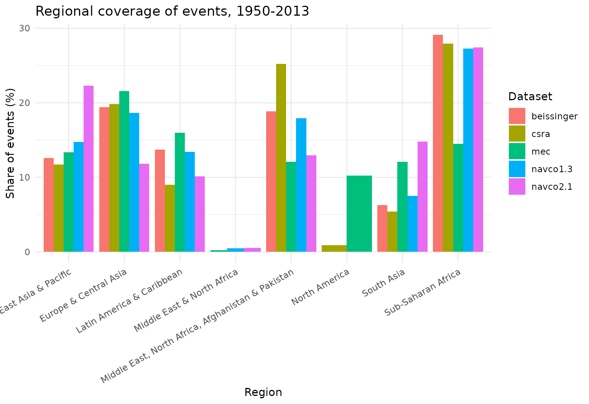
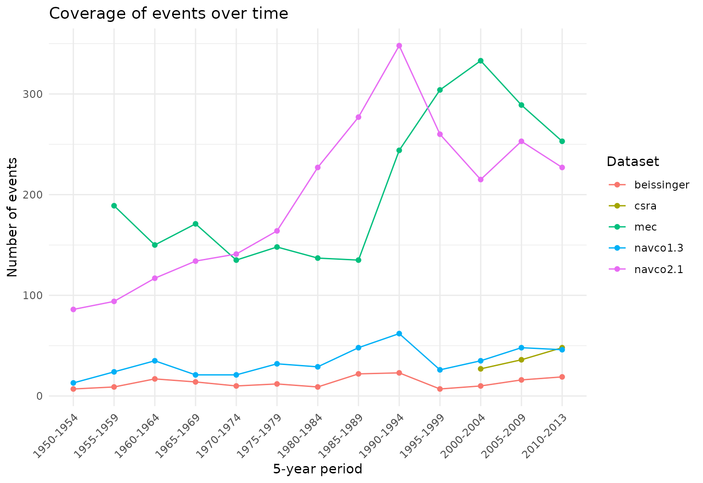
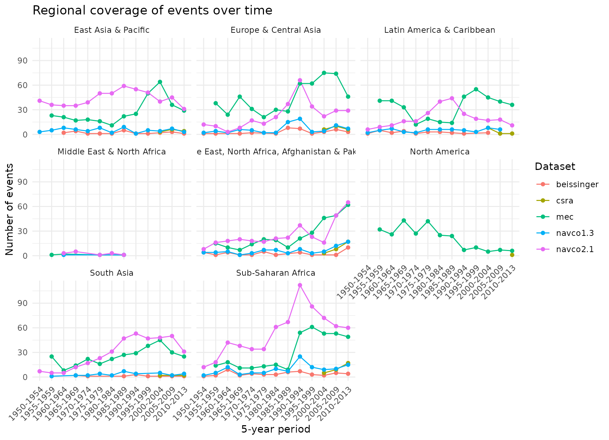
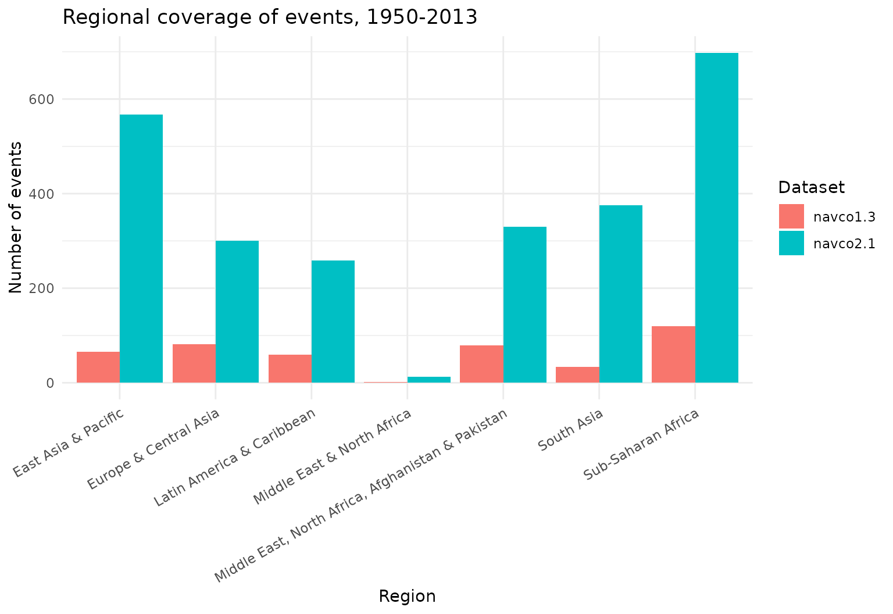

Comparing revolutionary-event datasets
Source:vignettes/dataset-comparison.Rmd
dataset-comparison.RmdcontentiousR bundles several campaign/episode datasets
that all aim to record the same broad phenomenon — mass anti-regime
contention — but differ in coding rules, sourcing, and scope: NAVCO 1.3,
NAVCO 2.1, Beissinger’s Revolutionary Episodes Dataset, the CSRA
Revolutions Dataset, and Major Episodes of Contention (MEC). Guseinov,
Ustyuzhanin, and Korotayev (2026) compare exactly these kinds of
datasets (NAVCO 1.3/2.1, CNTS, Beissinger, CSRA, and Historical Regime
Data) and find that, while not conceptually identical, the major sources
are empirically highly convergent in their regional and temporal
coverage — CNTS being the main exception, since it appears to record
coups and coup attempts rather than the same underlying concept of
revolution.
plot_regional_coverage() and
plot_temporal_coverage() reproduce that paper’s core
descriptive exercise (its Figures 1-5) for any set of
conflict_data() campaign/episode datasets you choose — not
a fixed pair, so you can compare two, three, or all five at once.
Regional coverage
For each dataset, this shows what share of its events falls in each
World Bank region
(countrycode::countrycode(..., "region")), so datasets of
very different total size remain comparable. Pass
metric = "count" instead of the default
"share" for raw counts.
library(contentiousR)
plot_regional_coverage(
datasets = c("navco1.3", "navco2.1", "beissinger", "csra", "mec"),
start_year = 1950,
end_year = 2013,
coding_system = "cow"
)
Sub-Saharan Africa and Europe & Central Asia account for a large share of events across every dataset here, broadly matching the source article’s Figure 1 (drawn from NAVCO, CNTS, Beissinger, and CSRA).
Temporal coverage
The same idea over time, binned into (by default) 5-year periods.
With by_region = FALSE (the default) it plots one global
panel, as in the article’s Figure 5:
plot_temporal_coverage(
datasets = c("navco1.3", "navco2.1", "beissinger", "csra", "mec"),
start_year = 1950,
end_year = 2013,
coding_system = "cow"
)
NAVCO 2.1 and MEC sit well above the other three here. This is expected, not a data quality problem: NAVCO 2.1 reports campaign-years (one row per year a campaign remained active) rather than a single onset row per campaign, and MEC’s underlying definition of a contentious episode is broader — reformist as well as maximalist claims — than the “revolution” concept the other datasets target. Mixing an onset-coded dataset with a campaign-year-coded one in the same comparison is a legitimate choice, but worth remembering when reading the chart.
With by_region = TRUE, the same data is faceted by
region, as in the article’s Figure 4:
plot_temporal_coverage(
datasets = c("navco1.3", "navco2.1", "beissinger", "csra", "mec"),
start_year = 1950,
end_year = 2013,
coding_system = "cow",
by_region = TRUE
)
Choosing your own comparison
Both functions take any subset of conflict_data()’s
campaign/episode datasets ("navco1.3",
"navco2.1", "beissinger", "csra",
"mec"), so a narrower, more like-for-like comparison is
just as easy — for example, the two NAVCO versions on their own:
plot_regional_coverage(c("navco1.3", "navco2.1"), 1950, 2013, metric = "count")
Reference
Guseinov, R., Ustyuzhanin, V., & Korotayev, A. (2026). Talking about the revolution? A comparative analysis of main datasets of revolutionary events. Defence and Peace Economics. doi:10.1080/10242694.2026.2704178